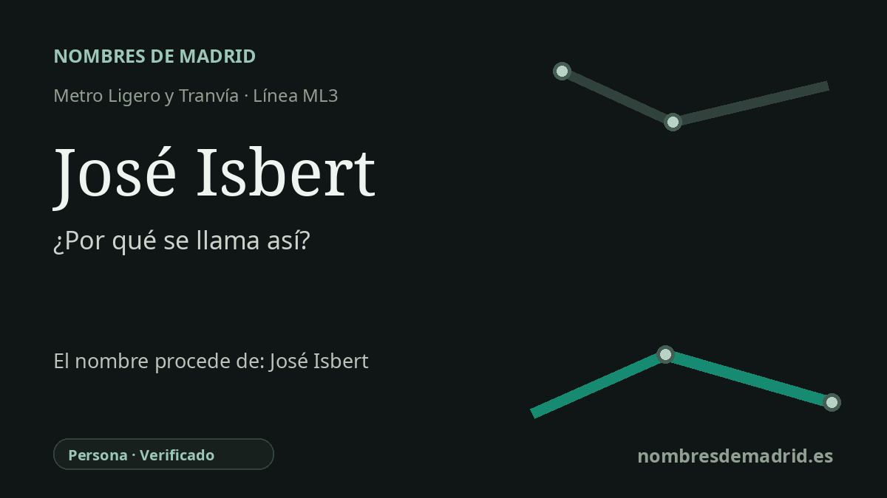

Publicado el · Investigación de Nombres de Madrid · Cómo verificamos cada origen · 8 fuentes consultadas
Respuesta rápida
La estación José Isbert toma su nombre de la calle José Isbert, en la Ciudad de la Imagen de Pozuelo de Alarcón. La calle recuerda a Pepe Isbert, uno de los actores cómicos más reconocibles del cine español y figura clave de películas como Bienvenido, Mister Marshall y El verdugo.
La historia del nombre
El origen inmediato del nombre de la estación es local y directo: Metro Ligero Oeste describe José Isbert como una parada de la ML3 situada en la calle José Isbert. Es decir, la estación heredó el nombre de la vía a la que da servicio en la Ciudad de la Imagen de Pozuelo de Alarcón.
Detrás de esa calle está José Ysbert Alvarruiz, acreditado habitualmente como José Isbert y recordado popularmente como Pepe Isbert. Nació en Madrid el 3 de marzo de 1886 y murió en la misma ciudad el 28 de noviembre de 1966. Su apellido artístico se fijó con la grafía Isbert, aunque varias fuentes biográficas recogen el apellido familiar como Ysbert.
Isbert comenzó como actor teatral a principios del siglo XX y más tarde se convirtió en uno de los rostros y voces más reconocibles del cine español. Su trayectoria pasó por el cine mudo, el teatro y después por una intensa etapa en el cine sonoro. En los años cincuenta y sesenta quedó asociado de forma especial a la comedia popular y satírica española.
Las películas más útiles para entender por qué su nombre encaja en la Ciudad de la Imagen son Bienvenido, Mister Marshall y El verdugo, ambas de Luis García Berlanga. El catálogo del ICAA incluye a José Isbert entre los intérpretes de Bienvenido, Mister Marshall, y los materiales cinematográficos del Instituto Cervantes lo sitúan en El verdugo junto a Nino Manfredi y Emma Penella. Esos títulos convirtieron a Isbert en una referencia inmediata de toda una etapa de la cultura cinematográfica española.
No consta una prueba fuerte de que la estación recibiera el nombre mediante un acto conmemorativo directo al actor, más allá del nombre de la calle existente. La confianza es alta respecto a la persona evocada y a la ubicación de la estación en la calle José Isbert, pero sigue abierta la fecha municipal exacta en que la calle recibió ese nombre. La cercanía del centro de conservación de la Filmoteca Española añade un contexto cinematográfico muy apropiado, aunque el centro actual se inauguró en 2014, después de la estación de metro ligero de 2007.